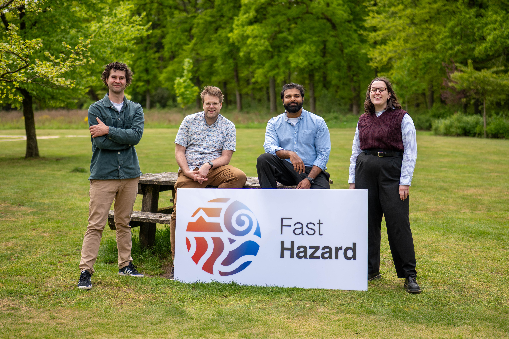
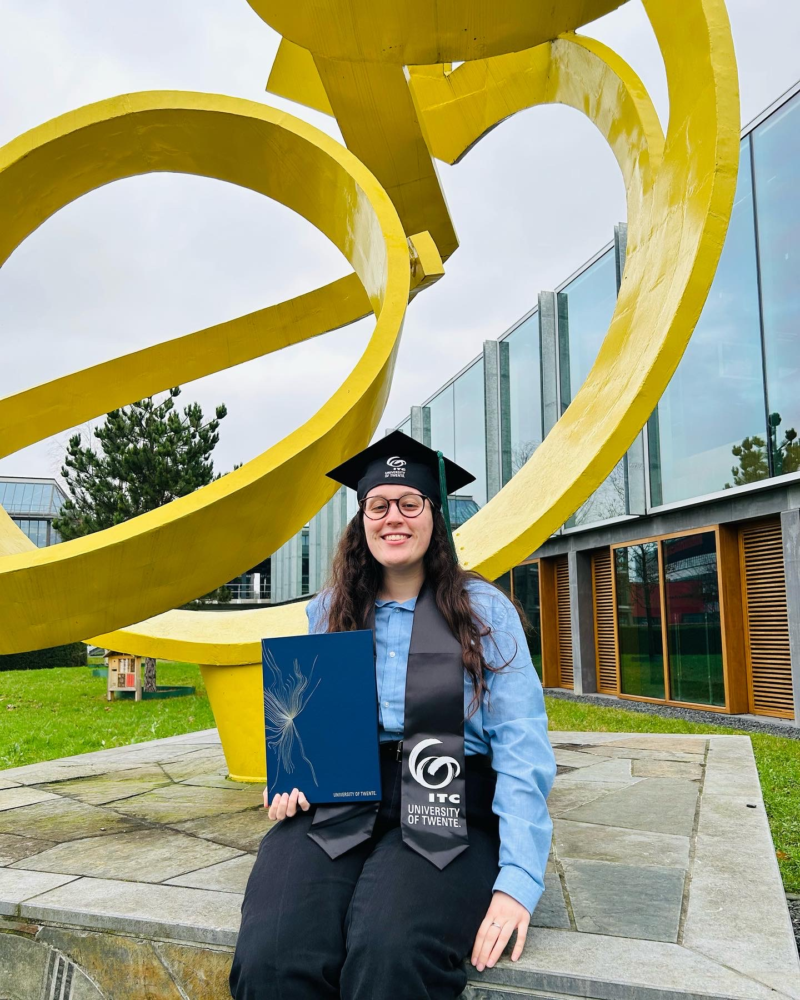
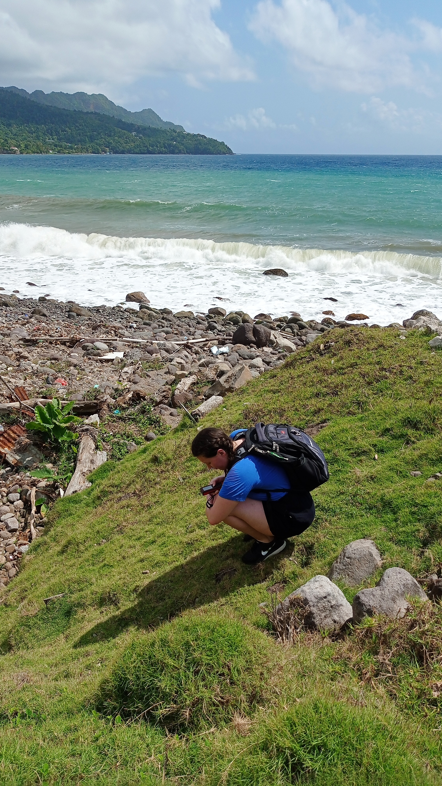
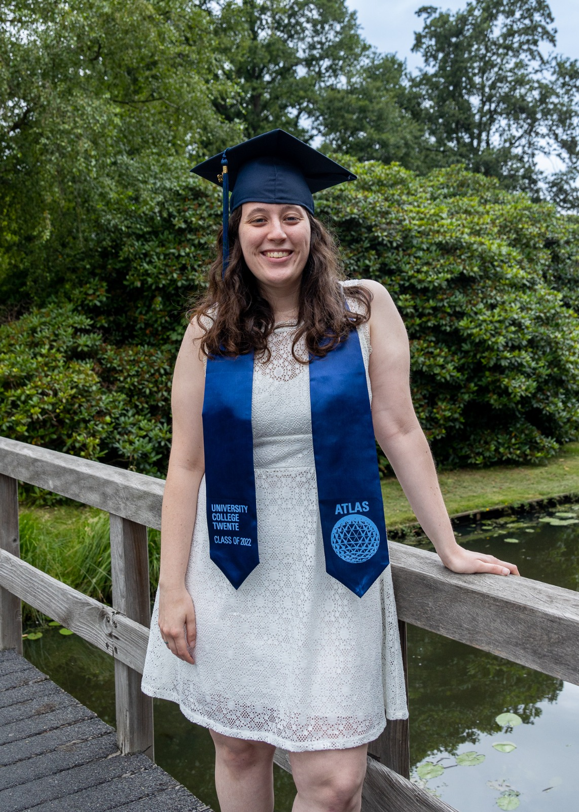
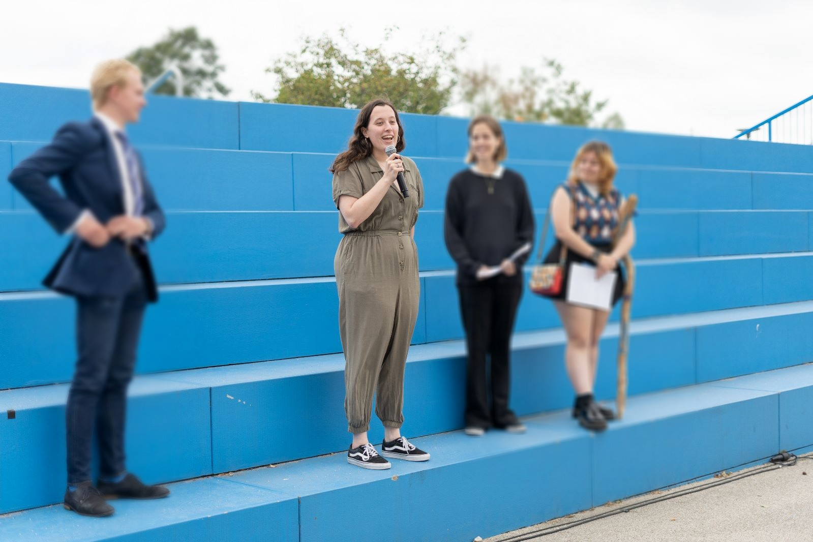

High-resolution interactive global flood forecast for past, present and future
EarthArXiv preprint, 2026 · doi:10.31223/X50F5S
A quick overview of my experience and skills. The full CV is available as a PDF.
Fast Hazard, Netherlands
March 2025 – Present
Delivering specialised flood modelling, hazard assessments and exposure analysis for government and humanitarian clients across Canada, the Caribbean and Palestine.

EarthArXiv preprint, 2026 · doi:10.31223/X50F5S
Delft, Netherlands
August – December 2024
Designed an uncertainty estimation module for the FloodAdapt software using Python and Monte Carlo simulations. Developed a workflow to propagate uncertainty through flood risk estimations, and analysed results using global sensitivity analysis. Led workshops on uncertainty integration within multidisciplinary teams and produced comprehensive technical documentation.
University of Twente (ITC), Netherlands
2022 – 2024
Specialisation in Natural Hazards and Disaster Risk Reduction.
Thesis: Integrating Probabilistic Weather Forecasting for Flood Early Warning in Dominica: an anticipatory action framework for a high-exposure Small Island Developing State, including fieldwork on the island.


University of Twente — ATLAS, University College Twente
2019 – 2022
Interdisciplinary honours bachelor combining engineering, social science and design thinking.
Specialisation: Earth Observation, Civil Engineering


A data-agnostic approach to applying FastFlood anywhere in the world, with case studies across Canada.
Designed and organised a hands-on FastFlood tutorial for practitioners with varied technical backgrounds.